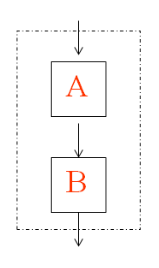

分支语句
任务：
1.执行结构 2.if语句 3.switch语句
目标：
1.什么是执行结构 2.分支语句 3.if语句 4.switch语句
第一节：执行结构
- 顺序结构
- 选择结构
- 循环结构
1.1 顺序结构
程序从上到下一行一行的执行代码，没有判断和中转。
1.2 分支结构
xxxxxxxxxx有选择性的执行或者跳过指定代码 
1.3 循环结构

第二节：if语句
2.1 简单if语句
xxxxxxxxxx //简单的if语句： //成绩如果大于60 给奖励 int score = 10; if(score>60){ System.out.println("给颗糖"); } 2.2 if-else语句
xxxxxxxxxx // 如果是男生 就永远18岁 // 如果是 女生 永远16岁 char c = '女'; if(c == '男'){// boolean 结果是true 执行if中 否则执行else中的 System.out.println("永远18岁"); }else{ System.out.println("永远16岁"); }2.3 多重if语句
xxxxxxxxxx char c = '女'; int score = 10; if(score>90 && c=='男'){ System.out.println("给送个女朋友"); }else if(score>90 && c=='女'){ System.out.println("给送个男朋友"); }else if(score<=1){ System.out.println("你是厉害人"); }2.4 嵌套if语句
xxxxxxxxxx // 如果成绩大于90 如果是男生 如果是女生 int score = 10; if(score>90){ if(c=='男'){ System.out.println("给送个女朋友"); }else{ System.out.println("给送个男朋友"); } }2.5 特殊的if语句
xxxxxxxxxx // 特殊形式 // 必须要求 if 或者 esle 语句中只能有一条语句 if(score>60) System.out.println("好学生"); else System.out.println("给送个女朋友"); 2.6 练习
xxxxxxxxxx// 需求 春天 打印输出 春暖花开 夏天 夏天打盹 秋天 秋高气爽 冬天 冬眠 String str = "冬天"; if(str=="春天"){ System.out.println("春暖花开"); }else if(str == "夏天"){ System.out.println("夏天打盹"); }else if(str == "秋天"){ System.out.println("秋高气爽"); }else if(str == "冬天"){ System.out.println("穿着短袖冬眠"); }2.7 练习二
xxxxxxxxxx// 1import java.util.Scanner;class Demo8{ public static void main(String[] args) { // == 判断基本数据类型内容是否相等 // 引用数据类型 == 判断内存地址 // 判断内容 String 类型 判断内容 equals Scanner sc = new Scanner(System.in); String str = sc.next(); // boolean falg= str.equals("春天"); if(str.equals("春天")){ System.out.println("春暖花开"); }else if(str.equals("夏天") ){ System.out.println("夏天打盹"); }else if(str.equals("秋天")){ System.out.println("秋高气爽"); }else if(str.equals("冬天")){ System.out.println("穿着短袖冬眠"); } } }第三节： switch语句
3.1 swtich语法规则
- 表达式expr的值必须是下述几种类型之一：
int, byte, char, short,enum；java7之后可以是String,不能用boolean,long,float,double等.
- case子句中的值const 必须是常量值(或final的变量)，case中的值不能是一个范围
- 所有case子句中的值应是不同的,否则会编译出错；
- default子句是可选的（不必要）
- break语句用来在执行完一个case分支后使程序跳出switch语句块；否则会继续执行下去
3.2语法格式
xxxxxxxxxx switch(表达式expr){ case const1: statement1; break; case const2: statement2; break; … … case constN: statementN; break; default: statement_dafault; break;] } 3.3 执行顺序：
xxxxxxxxxx 所有的 case 都不满足需求的时候 执行default中的内容 break 帮助跳出switch 语句的, 如果执行过程中 没有遇到 break 继续向下执行直到遇到break为止3.4 练习：
练习一： 简单实现switch语句
xxxxxxxxxx int i = 1; switch(i){ case 1: System.out.println("Hello World!"); break; case 2: System.out.println("Hello World!2"); case 3: System.out.println("Hello World3"); break; default: System.out.println("Haaaa"); break; }练习二： 判断 春夏秋冬
xxxxxxxxxxScanner sc = new Scanner(System.in); String str = sc.next(); switch(str){ case "春天": System.out.println("春暖花开"); break; case "夏天": System.out.println("闷热"); break; case "秋天": System.out.println("秋高气爽"); break; case "冬天": System.out.println("滴水成冰"); break; default: System.out.println("火星的"); break; }练习三： 需求： 利用switch实现一个计算器操作
Scanner sc = new Scanner(System.in); System.out.println("请输入第一个操作数:"); int a = sc.nextInt(); System.out.println("请输入运算符"); String str = sc.next(); int b = 0; // 利用了一个 if语句 帮助控制 如果是 ++ 或者是 -- 就不输入第二个操作数 if(str.equals("++")|| str.equals("--")){ }else{ System.out.println("请输入第二个操作:"); b = sc.nextInt(); } switch(str){ case "+": System.out.println(a+"+"+b+"="+(a+b)); break; case "-": System.out.println(a+"-"+b+"="+(a-b)); break; case "*": System.out.println(a+""+b+"="+(ab)); break; case "/": System.out.println(a+"/"+b+"="+(a/b)); break; case "%": System.out.println(a+"%"+b+"="+(a%b)); break; case "++": System.out.println("++"+a+"= "+(++a)); break; case "--": System.out.println("--"+a+"= "+(--a)); break; }3.5 特殊用法 ：case穿透
case穿透： 产生这种现象的原因:由于某个case语句中缺少或者漏写break语句所导致的结果.
// 需求: 打印输出指定的月份的天数 Scanner sc = new Scanner(System.in); int month = sc.nextInt(); switch(month){ case 1: case 3: case 5: case 7: case 8: case 10: case 12: System.out.println("31天"); break; case 2: System.out.println("28天"); break; case 4: case 6: case 9: case 11: System.out.println("30天"); break; } System.out.println("Hello World!"); }第四节：总结
默写
一、变量的分类——按照数据类型来分：
1.基本数据类型(8种):
1）数值型:
*整型:byte(-128~127) short int long
*浮点型: float double
2）字符型:char char类型占的是一个字符=两个字节=十六位
3）布尔型:boolean 注意,布尔类型的变量只有两种值:true false
2.引用数据类型：类、接口、数组
注意：除了基本数据类型以外的数据类型都是引用数据类型.
二、数据类型转换：
发生的场景：不同类型的变量之间进行运算
数据类型的转换分为两种：
1）自动类型转换:byte short char ==>int==>long==>float==>double
注意：a.当byte short char 之间进行运算时结果属于int型；
b.boolean类型不可以转换为其它的数据类型。
2）强制类型转换：将容量大的数据类型强制转换成容量小的数据类型，必须使用"(目标数据类型)"符号；
格式是：小的数据类型 = (小的数据类型)大的数据类型。
注意：强转后会造成精度的损失(丢失),丢的是高位。.
3）变量与字符串进行运算：
"+"：表示的是连接符,即运算结果是字符串
三、算术运算符：+ - * / % ++ --
1.取模：% 取余数，结果的符号取决于被模数的符号。
2.++：让变量的值自增1
1）前++：++在变量的前面，先自增1，后运算
2）后++：++在变量的后面，先运算，再自增1
3.--：让变量的值自减1
1）前--：--在变量的前面，先自减1，再运算
2）后--：--在变量的后面，先运算，再自减1
四、赋值运算符： = += -= *= /= %=
五、比较运算符：== < > <= >= !=
六、逻辑运算符： & && | || ! ^ （运算符两端是条件表达式）
1.逻辑与和短路与的区别: & &&
1）逻辑与：& 无论左端是否为false，右端都会执行。
2）短路与：&& 只要左端是false，则右端不执行，结果都为false。
2.逻辑或和短路或的区别：| ||
1）逻辑或：| 无论左端是否为true，右端都会执行。
2）短路或：|| 只要左端是true，则右端不执行，结果都为true。
注意：在日常开发中，我们建议使用短语与、短路或。
七、位运算符：对二进制进行操作：（运算符两端是整数）
>>（右移）
<< （左移）
>>> （无符号右移，注意：没有无符号左移<<< ）
& （按位求与）
| （按位求或）
^ （按位求异或）
~ （反码，带符号位取反）
八、三元运算符：(条件表达式)?表达式1:表达式2作业
1.编程实现已知某人的工资(要求输入)，求他应该缴纳的个人所得税以及最后得到的工资。
个人所得税计算方法计算方法 :
全月应纳税所得额 =工资薪金所得-3500
应纳税额 = 应纳税所得额 *税率-速算扣除数
级数 全月应纳税所得额 税率（％） 速算扣除数
1 不超过500元的 5 0
2 超过500元至2000元的部分 10 25
3 超过2000元至5000元的部分 15 125
4 超过5000元至20000元的部分 20 375
5 超过20000元至40000元的部分 25 1375
6 超过40000元至60000元的部分 30 3375
7 超过60000元至80000元的部分 35 6375
8 超过80000元至100000元的部分 40 10375
9 超过100000元的部分 45 15375
2.编写程序，给定一个学生成绩，给出相应等级：
90~100 优秀
80~89 良好
70~79 中等
60~69 及格
0~59 不及格
使用两种作法
3.从键盘接收一个名次(int) 使用switch-case作如下分支
名次为1 奖IPHONE8
名次为2 奖IPHONE7
名次为3 奖IPHONE6
名次为 4 奖IPHONE5
其它名次 努力吧，少年
4. 编写程序，判断给定的某个年份是否是闰年。
闰年的判断规则如下：
（1）若某个年份能被4整除但不能被100整除，则是闰年。
（2）若某个年份能被400整除，则也是闰年。
5定义三个整型变量x,y,z，从键盘初始化变量值，判断三个变量的大小，将较大的值赋给变量max，将max输出,注意输入使用scanner输入。面试题
1.switch是否能作用在byte上，是否能作用在long上，是否能作用在String上? 2.switch中default的位置是否必须出现在最后？